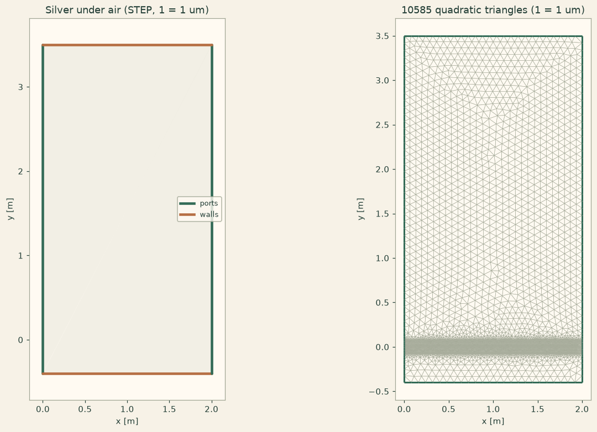

Docs › Examples › Surface plasmon polariton on a silver-air interface
Plasmonics, waveguide modes · 2D
Surface plasmon polariton on a silver-air interface
A surface plasmon polariton travels along a silver-air interface; its dispersion up to the surface plasmon frequency and its propagation length are computed.
Run locally with OneSimulation. The example downloads are free. Running them requires an activated runtime. OneSimulation 1.0 · CPython 3.13 on macOS (Apple Silicon), Ubuntu 22.04 (x86-64), and Windows x64. Installation and activation · View pilot plans. Scope of the reference checks.

What it computes
OneSimulation solves the magnetic field of a two-dimensional section read from STEP files drawn in micrometres (the mesh is scaled to metres, the model solved in SI units) with silver as a Drude metal; the waveguide ports compute the plasmon on their line through silver and air, and the plasmon fed at one port shows its field and its decay along the surface. The script that builds the STEP files comes with the notebook.
What it checks
Over 13 photon energies from 1.5 to 3.9 eV the effective index agrees with the exact relation sqrt(eps_m/(eps_m+1)) to 1.8e-5 and the propagation length to 1.2e-3 relative (260.6 um against 260.3 um at 1.5 eV, 1.17 um at 3.9 eV); the power received 2 um downstream matches exp(-2 Im(beta) L) to 1e-3.
Geometry
The notebook starts at the import of the CAD files metal_air_surface_plasmon_propagation.step, metal_air_surface_plasmon_propagation_band.step, metal_air_surface_plasmon_propagation_silver.step, metal_air_surface_plasmon_propagation_skin.step: STEP (AP242), readable by any CAD program, with the names of the faces that the boundary conditions use. Put them next to the notebook.


The geometry script
The script metal_air_surface_plasmon_propagation_geometry.py builds the geometry with the CAD objects of OneSimulation and writes the files. Change a dimension there, run it, and run the notebook again.
"""Geometry of the OneSimulation example "Surface plasmon polariton on a silver-air interface".
Builds, as thin plates with the CAD objects of OneSimulation and in micrometres, a section 2 um long
of 0.4 um silver under 3.5 um of air (metal_air_surface_plasmon_propagation.step; x_min and x_max are
the waveguide ports, y_min and y_max the far walls), the deep silver
(metal_air_surface_plasmon_propagation_silver.step), its top 80 nm (_skin.step) and 80 nm of air
above the interface (_band.step), the last two meshed finely.
"""
from onesim.cad.d3 import Box
length, air, metal, band, depth = 2.0, 3.5, 0.4, 0.16, 0.1
Box(length=length, width=air + metal, height=depth, origin=(0, -metal, 0)).save(
"metal_air_surface_plasmon_propagation.step"
)
Box(length=length, width=metal - band / 2, height=depth, origin=(0, -metal, 0)).save(
"metal_air_surface_plasmon_propagation_silver.step"
)
Box(length=length, width=band / 2, height=depth, origin=(0, -band / 2, 0)).save(
"metal_air_surface_plasmon_propagation_skin.step"
)
Box(length=length, width=band / 2, height=depth, origin=(0, 0, 0)).save(
"metal_air_surface_plasmon_propagation_band.step"
)The notebook
The complete notebook, cell by cell. Run it to produce the figures and the comparison printout.
A metal with a negative permittivity \(\varepsilon_m\) next to a dielectric \(\varepsilon_d\) carries a TM surface wave, bound to the interface on both sides. Its magnetic field is along the interface and decays exponentially into both media; its propagation constant follows from the continuity of \(H_z\) and of \(\varepsilon^{-1}\partial H_z/\partial y\):
With the Drude model of silver, \(\varepsilon_m=\varepsilon_\infty-\omega_p^2/(\omega^2+\mathrm i\gamma\omega)\) with \(\varepsilon_\infty=3.7\), \(\omega_p=1.37\times10^{16}\) rad/s (9.0 eV) and \(\gamma=3.2\times10^{13}\) rad/s, the plasmon starts on the light line at low frequency and bends over towards the surface plasmon frequency \(\omega_{sp}=\omega_p/\sqrt{\varepsilon_\infty+\varepsilon_d}\) (4.15 eV), where it slows down and its damping grows.
The section solves the out-of-plane magnetic field \(H_z\) of FrequencyDomainMaxwell. A SectionWaveguidePort computes the modes of its port line with the material along it - silver below, air above - and port_modes returns the complex propagation constant of the plasmon.
| boundary | condition |
|---|---|
x_min | waveguide port, plasmon fed with 1 W/m |
x_max | waveguide port |
y_min (0.4 um deep in the silver), y_max (3.5 um into the air) | perfect electric conductor |
Reference (H. Raether, Surface Plasmons on Smooth and Rough Surfaces and on Gratings, Springer 1988, §2.1; S. A. Maier, Plasmonics: Fundamentals and Applications, Springer 2007, §2.2). The dispersion relation above, with the same Drude permittivity.
The STEP parts are drawn in micrometres, the unit that suits a skin of 20 nm; scaled brings the mesh to metres, so the model is solved in SI units and the plots show micrometres again.
import numpy as np
from onesim.cad.exchange import load
from onesim.materials import VACUUM_PERMEABILITY, VACUUM_PERMITTIVITY
from onesim.materials.electromagnetic import (
DrudeElectromagneticMaterial,
IsotropicElectromagneticMaterial,
RegionwiseElectromagneticMaterial,
electronvolts_to_angular_frequency,
)
from onesim.meshing import TriangularMesher, scaled
from onesim.numerics import Numerics
from onesim.numerics.fem import FiniteElement, Lagrange
from onesim.numerics.linear import ComplexSparseDirect
from onesim.physics.electromagnetics import (
FrequencyDomainMaxwell,
PerfectElectricConductor,
SectionWaveguidePort,
port_modes,
scattering_parameters,
)
from onesim.simulation import Problem, Simulation
from onesim.visualization import plots, theme
theme.set()
light = 1 / np.sqrt(VACUUM_PERMEABILITY * VACUUM_PERMITTIVITY)
silver = DrudeElectromagneticMaterial(
plasma_frequency=1.37e16, collision_rate=3.2e13, high_frequency_permittivity=3.7
)Geometry and mesh
load reads the section, the deep silver, its top 80 nm (the skin) and 80 nm of air above it; section cuts them at half thickness. Quadratic triangles of 10 nm in skin and band and 80 nm elsewhere resolve the plasmon, which decays within 20 nm in the silver and within 50 nm to 0.7 um in the air. scaled(..., "um") turns the micrometres of the drawing into metres.
parts = {
name: load(f"metal_air_surface_plasmon_propagation{name}.step").section(
(0, 0, 1), origin=(0, 0, 0.05)
)
for name in ("", "_silver", "_skin", "_band")
}
section = parts[""]
sides = section.boundaries
mesh = scaled(
TriangularMesher(
target_size=0.08,
embedded_regions=tuple(
parts[f"_{name}"].named(name) for name in ("silver", "skin", "band")
),
region_sizes={"skin": 0.01, "band": 0.01},
).generate(section),
"um",
)
fig = plots.figure(1, 2, size=(12, 7))
plots.geometry(
section,
selection={"ports": sides.x_min | sides.x_max, "walls": sides.y_min | sides.y_max},
labels=False,
title="Silver under air (STEP)",
length_unit="um",
drawing_unit="um",
ax=fig[0],
)
plots.mesh(
mesh,
groups=("all",),
legend=False,
title=f"{mesh.cell_count} quadratic triangles",
length_unit="um",
ax=fig[1],
)
plots.show()Model
One FrequencyDomainMaxwell model per photon energy, polarization Hz, silver in its region and air elsewhere. Each port keeps one mode - the plasmon - and the first port feeds it.
material = RegionwiseElectromagneticMaterial(
{"silver": silver, "skin": silver}, default=IsotropicElectromagneticMaterial()
)
numerics = Numerics(
spatial=FiniteElement(element=Lagrange(order=2)),
linear_solver=ComplexSparseDirect(),
)
model = lambda energy: FrequencyDomainMaxwell(
domain=section.domain(),
frequency=electronvolts_to_angular_frequency(energy) / (2 * np.pi),
material=material,
polarization="Hz",
phasor_convention="exp(-i*omega*t)",
amplitude_convention="peak",
)
solve = lambda physics: Simulation(
problem=Problem(
name="silver-air plasmon",
geometry=section,
physics=(physics,),
boundary_conditions=(
SectionWaveguidePort(
physics=physics, boundary=sides.x_min, modes=1, incident_power=1.0
),
SectionWaveguidePort(physics=physics, boundary=sides.x_max, modes=1),
PerfectElectricConductor(
physics=physics, boundary=sides.y_min | sides.y_max
),
),
),
mesh=mesh,
numerics=numerics,
).solve_stationary()
energies = np.linspace(1.5, 3.9, 13)
models = [model(energy) for energy in energies]
results = [solve(physics) for physics in models]
computed = np.array(
[
port_modes(result, physics)[0]["propagation_constant"][0]
for result, physics in zip(results, models)
]
)Results
\(k_0\) and \(\beta\) are in rad/m; the received power over the 2 um between the ports checks the damping independently of the mode solver.
wavenumbers = 2 * np.pi * np.array([physics.frequency for physics in models]) / light
metals = np.array(
[silver.relative_permittivity_at(physics.frequency) for physics in models]
)
exact = wavenumbers * np.sqrt(metals / (metals + 1))
through = np.array(
[
abs(scattering_parameters(result, physics)[(1, 0)]) ** 2
for result, physics in zip(results, models)
]
)
print(
"energy eps_silver n_eff = beta/k0 L_p [um] |S21|^2 over 2 um"
)
print(
"[eV] computed exact computed exact computed exp(-2 Im(beta) L)"
)
for i, energy in enumerate(energies):
print(
f"{energy:5.2f} {metals[i].real:7.2f}{metals[i].imag:+6.3f}i {computed[i].real / wavenumbers[i]:.6f} {exact[i].real / wavenumbers[i]:.6f} "
f"{1e6 / (2 * computed[i].imag):8.2f} {1e6 / (2 * exact[i].imag):8.2f} {through[i]:.5f} {np.exp(-2 * exact[i].imag * np.ptp(mesh.coordinates[:, 0])):.5f}"
)
print(
f"\nlargest deviation of n_eff: {np.max(np.abs(computed - exact) / wavenumbers):.1e}; "
f"largest relative deviation of L_p: {np.max(np.abs(computed.imag / exact.imag - 1)):.1e}"
)
print(
f"surface plasmon frequency omega_p / sqrt(eps_inf + 1) = {1.37e16 / np.sqrt(4.7) / electronvolts_to_angular_frequency(1.0):.2f} eV"
)Figure
The dispersion of the plasmon against the light line, its propagation length, and the instantaneous magnetic field of the plasmon fed at 3 eV near the surface.
at = int(np.argmin(np.abs(energies - 3.0)))
x, y = np.asarray(mesh.coordinates).T
field = (
results[at]
.field(models[at].magnetic_flux_density)
.evaluate(np.column_stack((x, y)))[:, 2]
)
fig = plots.figure(1, 3, size=(24, 6.5))
plots.line(
y={
"plasmon": (1e-6 * computed.real, energies),
"light line": (1e-6 * wavenumbers, energies),
},
reference={"plasmon": (1e-6 * exact.real, energies)},
hlines={
"surface plasmon frequency": 1.37e16
/ np.sqrt(4.7)
/ electronvolts_to_angular_frequency(1.0)
},
xlabel="Re(beta) [rad/um]",
ylabel="photon energy [eV]",
title="Dispersion (dashed: exact)",
legend="lower right",
ax=fig[0],
)
plots.line(
energies,
{"propagation length": 1e6 / (2 * computed.imag)},
reference={"propagation length": 1e6 / (2 * exact.imag)},
scale="logy",
xlabel="photon energy [eV]",
ylabel="L_p [um]",
title="Propagation length (dashed: exact)",
legend="upper right",
ax=fig[1],
)
plots.heatmap(
x,
y,
(field / np.abs(field).max()).real,
triangles=np.asarray(mesh.cells),
colormap="diverging",
centre=0.0,
limits=(-1, 1),
label="Re(H_z) / max |H_z|",
aspect="auto",
ylimits=(-0.15e-6, 0.35e-6),
length_unit="um",
title=f"Plasmon at {energies[at]:.1f} eV",
ax=fig[2],
)
plots.show()Going further
Replace the air by glass (\(\varepsilon_d=2.25\)): the surface plasmon frequency drops to 3.4 eV and the plasmon is confined more tightly. A second interface below a thin film couples two plasmons into a long-range and a short-range mode.